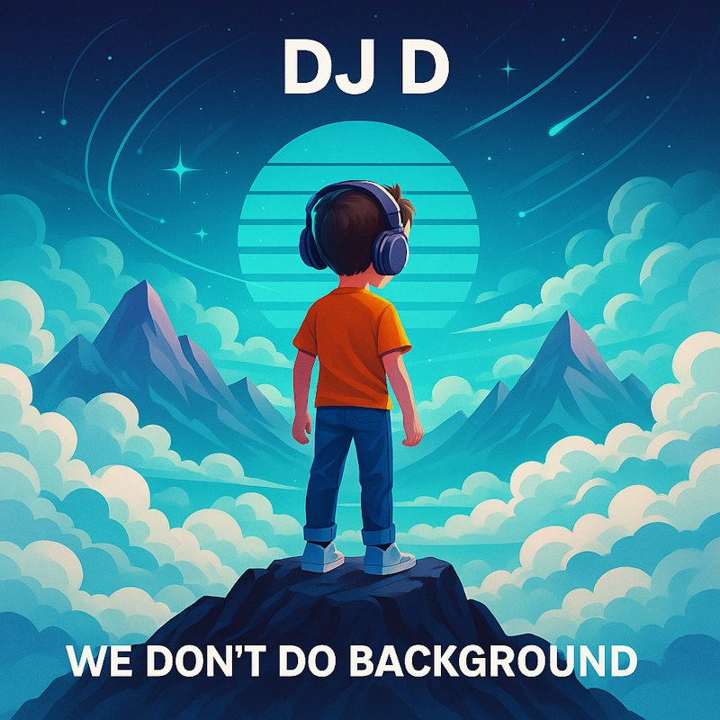
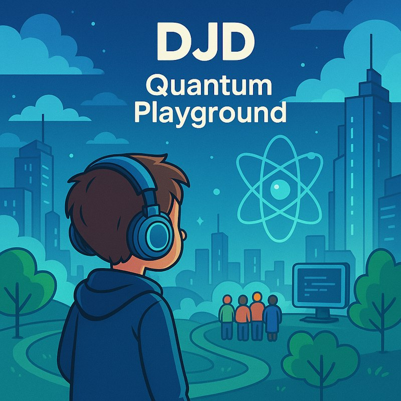
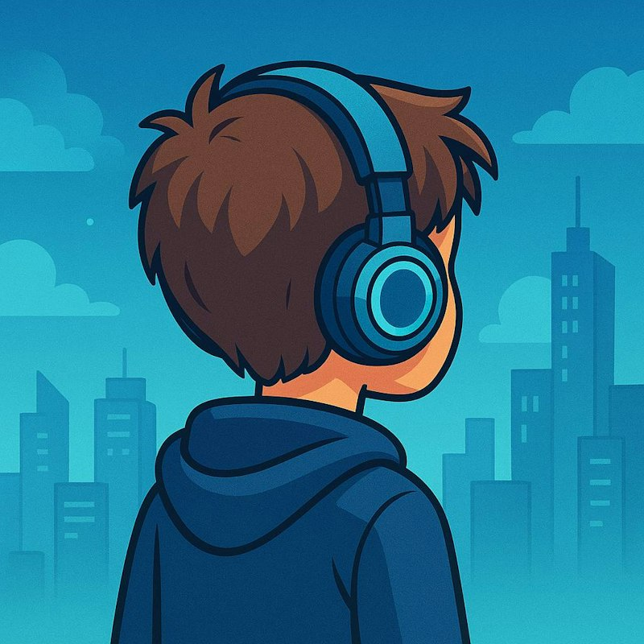

Enter the World of DJD
Turn up
tomorrow.
Digital worlds. Human connection.
Two albums from the imagination of DJD.
Pop with a future-facing imagination

The second chapter / 15 tracks
Quantum PlaygroundThe discography
Two albums.
One restless imagination.
From digital horizons
to a quantum playground.
Choose a chapter. Press play.
01
DJD 17 tracks · 2025
The debut album
We Don't Do Background Music
The first chapter. From “Unstoppable Youth” to “Continuing the Journey,” 17 songs explore digital horizons, shared dreams, and the drive to keep moving.
Spotify: We Don't Do Background Music (opens in a new tab) Apple Music: We Don't Do Background Music (opens in a new tab)
Explore the tracksPreview clips
02
DJD 15 tracks · 2025
The second chapter
Quantum Playground
The next chapter. “Ignite This Fire,” “Coffee and Code,” and “Reaching for Tomorrow” lead a 15-track journey through curiosity, connection, and possibility.
Spotify: Quantum Playground (opens in a new tab) Apple Music: Quantum Playground (opens in a new tab)
Explore the tracksPreview clips

Inside the headphonesThe artist
This is DJD.
Big ideas run through DJD’s music: digital worlds, human connection, and what comes next.
From We Don’t Do Background Music to Quantum Playground, the titles tell their own story. “Dreams in the Cloud.” “Ascending Together.” “Celebrate the Future.” A world built around curiosity and forward motion.
Find DJD on your platform (opens in a new tab)The next track is yours.